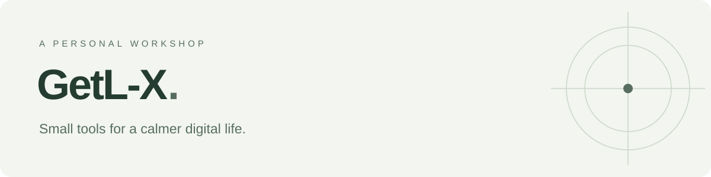

做一些自己想用，也希望你会喜欢的小工具。
关注日常生活里的小需求，把它们做成简单、实用的作品。
精选作品 · Selected work

LastDone · 生活记录
上次是什么时候？下次该什么时候？记录容易忘记的周期事项，让日常维护有迹可循。
离线优先 · 周期提醒 · 自托管
Cozy Journal · 写作空间
一个日记风格的 WordPress 主题，为文字、日常和自己的表达留一点空间。
WordPress · 自定义排版 · 日记风格B 站音频增强 · 体验改善
让人声更清楚，让音量更顺手。为 B 站播放器补上实用的音频调节功能。
油猴脚本 · 人声增强 · 响度平衡还有这些 · More to explore
- Personal Daily — 自动汇总科技、开源、游戏与全球时政的个人日报。
- Tiny Site — 一个极简的个人主页、博客与文档示例。
GetL-X · Small tools for a calmer digital life.